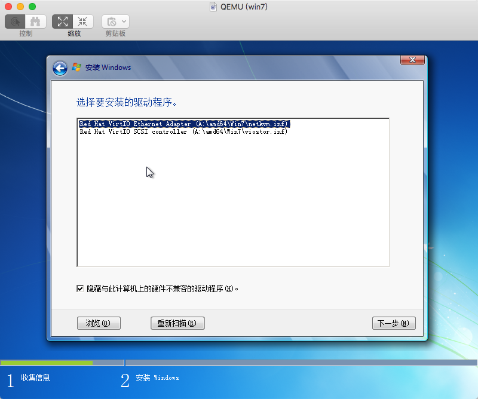

把之前下载好的win镜像和virtio驱动包上传到kvm主机上去
创建一个虚拟主机
virt-install \
--name win7 \ # 主机名称
--memory 2048 \ #主机内存
--vcpus sockets=1,cores=1,threads=2 \ #主机cpu 1个cpu 1核 2线程
--cdrom=/ios/cn_windows_7_ultimate_with_sp1_x64_dvd_u_677408.iso \ #安装镜像
--os-variant=win7 \ #系统类型
--disk /vhost/win7.qcow2,bus=virtio,size=40 \ #创建磁盘
--disk /ios/virtio-win-0.1.126_amd64.vfd,device=floppy \ #挂载软盘
--network bridge=br0,model=virtio \ #指定网卡
--graphics vnc,password=Passw0rd,port=5910 \ #启用vnc
--hvm \
--virt-type kvm
运行以上命令之后就开始创建虚拟机了.
以上的错误信息请忽略,不会产生太大的影响.
接下来连接vnc进行图形化安装,当然可以使用webVritMgr进行图形化安装.进行vnc连接的话要使用隧道映射到本地的端口,因为5910顿口只能在宿主机上访问ssh -L 5910:127.0.0.1:5910 root@192.168.3.110把端口映射到本地.
连接vnc进行安装
点击浏览按钮,加载刚才我们下载好的virtio驱动包
安装驱动
安装好以后就是我们喜闻乐见的下一步下一步的安装了.值得注意是,在安装过程中,虚拟机会重启多次,如果虚拟没有自己启动,请手动重启一下.附上安装好的截图